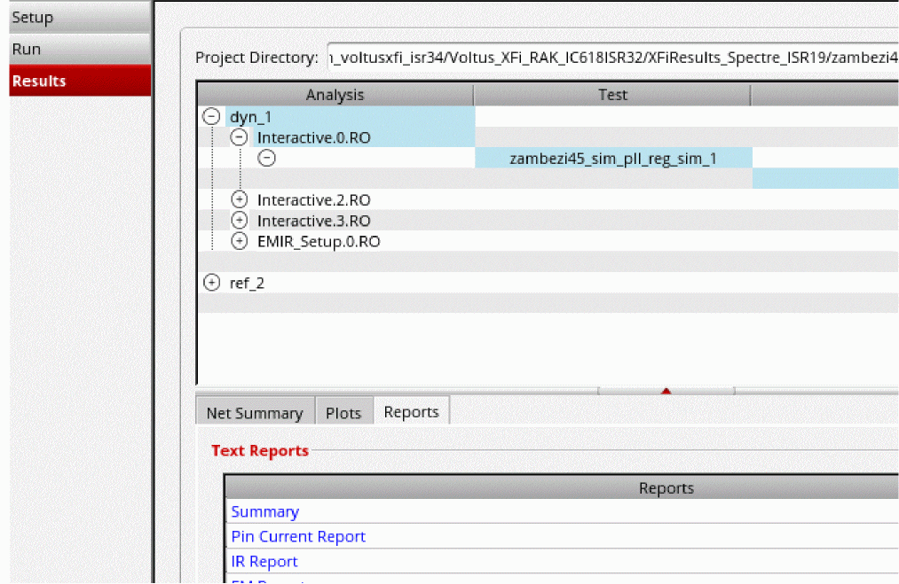

Viewing EM-IR Analysis Reports
By default, Voltus-XFi generates the following reports for EM-IR analysis:
-
Summary report (
summary.rpt), which includes reports for all analyses (IR drop and EM) performed in the current run -
IR drop analysis report with the extension,
*.rpt_ir -
EM analysis report with the extension,
*.rpt_em -
Unmatched resistors report with the extension,
*.rpt_unmatch -
Pin current report with the extension,
*.rpt_pin
To view the EM-IR analysis reports, do the following:
- On the Voltus-XFi window, choose Results from the task pane.
- Select an analysis, test, and corner for which you want to view the reports.
-
Select the Reports tab.

-
In the Text Reports section, click on a report that you want to view under the Type column.
The selected report is displayed in a separate window.
- Summary Report
- IR Report
- EM Report
- Unmatched Resistor Report
- Pin Current Report
- Viewing Waveform Results
Return to top